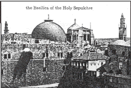

|
| A B C D E F G H I J K L M N O P Q R S T U V W X Y Z |
 This article treats of the "City of God", the political and religious centre of the People of Israel, with its destruction by the Romans after it had become the scene of the Redemption. This part of the subject will be divided as follows:
According to Jewish tradition (Josephus, "Antiq. Jud.", I, 10:1; Targum Onkelos, Genesis 14:18), Jerusalem was originally called Salem (Peace), and was the capital of King Melchisedech (Genesis 14:18). This tradition is confirmed by the cuneiform tablets discovered in 1888 at Tell Amarna, in Egypt (see below, under III. History). Five of these letters, written at Jerusalem about the year 1400 B.C., inform us that the city was then called U-ru-sa-lim. It figures in Assyrian inscriptions under the name of Ur-sa-li-im-mu. According to the Assyrian syllabaries, uru and ur signify "city" (Hebrew ir). In several of the Tell Armana Tablets the word salim is used in the sense of "peace". Ursalim, therefore, means "City of Peace". The Psalmist, too, connects Salem with Sion: "He hath his tabernacle in Salem, and his abode upon the mountain of Sion" [Psalm 75:3]. When the Israelites came into the Land of Promise, Jerusalem was in the power of the Jebusites, and bore the name of Jebus. The Hebrews, however, were not ignorant of its ancient name; they often called it Jerusalem (Joshua 10:1; Judges 19:10; 2 Samuel 5:6, etc.). In other passages of the Bible it is called Jerusalem (1 Chronicles 3:5; Jeremiah 26:18; Esther 2:6, etc.). The Septuagint. writes its name Ierousalem. Under the hellenizing influences which invaded Palestine, Salem became Solyma (Antiq. Jud., I, x, 2), and Jerusalem ta Ierosolyma (The Holy Solyma) (1 Maccabees 1:14, 20; 2 Maccabees 1:10; Bell. Jud., VI, 10:etc.). The New Testament employs sometimes the Septuagint form and sometimes that of Machabees, which the Vulgate renders by Jerusalem and Jerosolyma. The Syriac Version gives Uris lem, a form more nearly approaching the Assyrian. When the Emperor Hadrian rebuilt the city, A.D. 136, he gave it the name of Ælia Capitolina. From the Mohammedan conquest of Palestine, in the seventh century, until our own times, the Arabs have called it El Quds, "The Holy" --the ir haq qodes, or "Holy City", of II Esd., xi, 18 (cf. Matthew 4:5, etc). Among all other people the name Jerusalem has continued in use until now.
Jerusalem is situated in latitude 31° 46' 45" N. and longitude 35° 13' 25" E. of Greenwich, about 32 English miles in a straight line from the Mediterranean on the west, and 13 from the Dead Sea on the east. It stands on the crest of a chain of mountains which traverses Palestine from north to south, and the highest point of which, at the northwest corner of the city, is 2577 feet above the level of the Mediterranean, and 3865 above that of the Dead Sea. Owing to this difference of level the western slope of these mountains, towards the Plain of Sephela, which extends to the Mediterranean, is gentle, while that to the east is very steep. A girdle of high hills surrounds the city, forming a sort of natural rampart. On the north is Mt. Scopus (2705 feet), next to it, on the east, the Mount of Olives (2665 feet), beyond which again is the Mount of Offence (2410 feet) (1 Kings 11:7; 2 Kings 23:13). To the south is the Mount of Evil Counsel (2549 feet), which forms the eastern boundary of the Plain of Raphaim, and next, on the southwest, comes a hill (2557 feet) to which no name has been given. Towards the northwest the city is more exposed; at some distance in that direction it is dominated by the Nebi Samwil, the ancient Maspha, which has an altitude of 2935 feet. Notwithstanding the difficulty of access in its natural situation, Jerusalem is the centre of a network of ancient roads which connect it, on the east, with Jericho and the Jordan; on the south, with Hebron and Gaza; on the west, with Jaffa and Caesarea; on the north, with Samaria and Galilee. It was, however, situated beyond the great military and commercial highways between Egypt and Assyria.
The ancient city occupied the same position as the present, except that its southern extremity has remained outside of the walls since the reign of Hadrian (A.D. 136). Thanks, however, to systematic operations undertaken by English, American, and German engineers, much of the old southern wall has been brought to light. While, in many places, masses of ruins have changed the appearance of the ground, excavations and vertical borings, made within the last fifty years, have, nevertheless, enabled the explorers to construct sufficiently-exact maps of the primitive configuration. The ground on which Jerusalem stands, within this ring of surrounding mountains, is by no means uniform in character: on three sides-the east, south, and west-it stands upon terraced heights bordered by deep valleys which give it the appearance of a promontory jutting out to the south. The city itself is furrowed with ravines which cut it up into a number of little hills. The longest of these valleys measures scarcely two miles and a half; they have all been formed by erosion, due to torrential rainfall, in the quaternary period. To the north of the city they take the shape of mere depressions in the soil, then, as they descend, sinking rapidly in the calcareous rock of which the mountains are formed, they soon become deep gorges, all coming together at the southeast angle of the city, at a depth of about 600 feet below their starting-point. The two principal hills rise on the southwest and the east respectively. The former of these hills is called Mount Sion because, according to Josephus (Antiq. Jud., XVI, vii, 1), Eusebius, and all the authors, Jewish and Christian, who have followed them, the city of Jebus, or Sion-the City of David-stood there. This view, however, is contested by certain modern Palestinologists, who would locate Sion upon the northern declivity of the second of these hills, Mount Moria (2 Chronicles 3:1), where stood the Temple of Jehovah.
(a) Mount Sion is bounded on the west by a valley which begins near the old pool called Birket Mamilla (see below, under D), about 1000 feet to the northwest of the hill itself. This valley, following a southeasterly direction as far as the Jaffa Gate, the ancient gate of the gardens (Gennath) (Bell. Jud., V, iv, 2), then turns to the south and forms a great reservoir of water called the Birket es Sultan, by means of a massive dam, which was rebuilt in the twelfth and the sixteenth centuries. This is the Fountain of the Dragon (tannin) which Nehemias came to when he went out of the city by the western gate (D.V., "dragon fountain", Nehemiah 2:13). Josephus calls it the Pool of the Serpent (Bell. Jud., V, iii, 2); the Hebrew tannin simplifies both "dragon" and "serpent". This valley is called by the natives Wadi Rababi; in the Bible it goes by the name of Ge Hinnom, or Ge Ben Hinnom, "Valley of Ennom" (in A.V., Hinnom) or "of the son of Ennom"-an unknown personage (Joshua 15:8; 18:16; Nehemiah 11:30; Jeremiah 19:2). Below the Birket es Sultan, it turns to the east, passes below Halcedama, and connects with the Valley of Cedron. At the junction of the two valleys are the rich plantation forming "the king's garden" (or, in D.V., "the king's guard") mentioned in 2 Kings 25:4; Jeremiah 39:4; Nehemiah 3:15. Also at the mouth of the Valley of Hinnom is situated Topheth, the high place where Achaz and Manasses set up the worship of Baal-Moloch (2 Chronicles 28:3; 33:6). The good King Josias defiled this execrable place, scattering human bones over it (2 Chronicles 34:3-5), in spite of which Joakim restored there the infamous worship of Moloch. From the unholy fires which were kept burning there for nearly a century and a half-those fires through which the apostate Jews caused their children to pass, in order to consecrate, or immolate, them to Moloch-Ge Hinnom (in Aramaic, Gehenanm) received the name of Geenna tou pyros, "Gehenna of the Fire", and became the emblem of hell (in Greek text, Matthew 5:22-30; Mark 9:43-45). The Valley of Cedron, from Hinnom as far as the Dead Sea, is still called Wadi en Nar, "Valley of Fire".
On the north, Mount Sion is bounded by a valley, now largely filled in, which goes down in a straight line from the Jaffa Gate eastward to the foot of Mount Moria. On the slope of this valley is a large reservoir called in Arabic Birket Hammam el Batrak, "Pool of the Baths of the Patriarch", and in the itineraries of the pilgrims "Pool of Ezechias". Josephus calls it Amygdalon, a name which, according, to Conder, may with good reason be derived from ham migdalon, "facing the great tower", since the pool faces the Tower of Phasael. This valley, like all those which pass through the city, has no proper name in the Bible; neither has it in Arabic; it is conventionally known as the Transverse Valley. A third valley begins outside the Damascus Gate (Bab el Amoud) and descends southward, with a slight deflection to the east, dividing the city in two; until it joins the Valley of Hinnom. After passing the opening of the Transverse Valley, it forms a gorge of some depth separating Mount Sion from Mount Moria. Its rocky bed has found by the English engineers 69 feet below the actual surface of the ground near the Wailing Place, and 85 feet from the southwest angle of the Temple. It encloses, towards its extremity, the Pool of Siloe, which receives through a subterranean channel the waters of the Virgin's Fountain that flow through the hollow of Cedron. A little farther on, the valley has been dammed with a wall 233 feet in length, which, retaining the whole rainfall of the valley, formed the reservoir called by Nehemias "the king's pool" (in D.V., "the king's aqueduct", Nehemiah 2:14). In Scripture this valley figures under the name of Nahal, "ravine", or "torrent of winter" (Nehemiah 2:15). Josephus in one place designates it "the wide valley" (Bell. Jud., V, iv, 1), and the Arabs call it simply El Wad, "the valley". In works on the Holy Land it also bears the designation of "the central valley ".
Surrounded on all sides by these deep ravines, Mount Sion presents a quadrilateral surface measuring about 2600 feet from north to south and 2000 feet from east to west. It is the largest of the hills of Jerusalem, the highest, and the only one completely isolated. Its highest point reaches an altitude of 2558 feet, and rises 531 feet above its base at the southeastern angle. Its surface is considerably varied, being, indeed, divided by a small depression which branches off from the middle of the Transverse Valley and descends obliquely to the Pool of Siloe. Mount Sion thus consists of two lofty connected plateaux, one (the lower) stretching westward, the other (the shorter) to the northwest. The former is fairly uniform and measures 2300 feet in length from north to south, and 920 feet in breadth. After sinking about 100 feet towards the northwest, the ground rises about 20 feet and forms a rounded eminence opposite to the Temple, terminating in a precipice 195 feet above the former bed of EI Wad.
(b) Mount Moria, or the Eastern Hill, is a narrow promontory connected with Mount Bezetha, the highest point of which is the Hill of Jeremias, with an altitude of 2556 feet. This tongue of land terminates on the south in a point near the Pool of Siloe; El Wad encloses it on its western side, and the Valley of Cedron on its eastern. Upon its highest crest (2443 feet) was the domain of Ornan (Areuna), the Jebusite, where Solomon built the Temple and his palaces. This is the summit called Moria; south of the royal quarter, the hill (2300 to 2050 feet) bears the name of Ophel (2 Chronicles 27:3). Cedron, which, since the third century after Christ, has also been called the Valley of Josaphat begins near the so-called Tombs of the Judges, and descends, under the name of Wadi ed Djoz (Valley of Walnuts), southeast to the foot of Scopus, thence south, becoming a deep gorge separating Mount Moria from the Mount of Olives and the Mount of Offence. At a point 1300 feet beyond the northeast angle of the city, it is crossed by a bridge which has replaced one of the Jewish period. This older Jewish bridge gave access, on the right, to a staircase cut in the rock and leading up to the north side of the Temple, and, on the left, to a similar staircase leading up to the Mount of Olives. To the left of the bridge is the Garden of Gethsemani, with the Tomb of the Blessed Virgin, from which the Arabs call this part of Cedron Wadi sitti Mariam, or "Valley of the Lady Mary". Next come, on the same side, two fine monuments of the Graeco-Roman-Judaic style (second to first century B.C.) excavated in the rock. The first of these has been called, since the fourth century after Christ, the Tomb of Absalom; the second, the Tomb of the Prophet Zacharias. Between the two is a grandiose Jewish tomb of the same period, belonging to the family of Beni Hezir. A little farther on, upon the side of the Mount of Offence, is to be seen a rock-hewn tomb of Egyptian architecture. Upon the same slope is perched the village of Silwan, the houses built against long rows of sepulchres, most of them cut in a vast bank of calcareous rock, popularly known as Ez Zehwele. Opposite, at the foot of Ophel, a flight of thirty-two steps descends to a grotto, in which is a spring of slightly brackish water. This spring presents the phenomenon of a natural (subterranean) syphon producing an intermittent flow; only at intervals-from three to six times a day-does the water rush down, with a strange humming noise, from a cleft in the rock. The water of this spring is conveyed to the Pool of Siloe by a winding tunnel. The Arabs call the fountain Ain Sitti Mariam, in honour of the Blessed Virgin, and also Ain Oumm Daradj, "Fountain of the Mother of the Stairs"; its Biblical name is, according to some, En Rogel; according to others, the Upper Gihon (see below, under D). Cedron now begins to widen, and is covered with rich gardens, the "king's gardens" mentioned in the Bible. It receives the Hinnom, together with EI Wad and the little valley which descends obliquely from Mount Sion. Its descent in a course of about two and a half miles is 550 feet, but in the latter half of this distance it is encumbered with fifteen to fifty feet of rubbish.
To the north of Mount Moria one more valley begins outside the Gate of Herod (Bab Zahira), passes to the south-southeast, under the northeastern angle of the platform of the Temple, and ends at the bridge of Cedron. The numerous pools in this depression, near St. Anne's church, the traditional birthplace of the Blessed Virgin, have been excavated. Here should be located the Probatic Pool, or Pool of Bethsaida (A.V. Bethesda), with the five porches (John 5:2). The locality of the Birket Israil, a reservoir 359 feet long by 126 feet wide, has also been determined, to the north, against the outer wall of the Temple.
(c) Mount Gareb (in D.V., "the hill Gareb"-Jeremiah 31:39) stretches between the Transverse Valley, on the south, and the upper course of El Wad, on the east. It rises somewhat abruptly towards the northwest but offers no particularly prominent height except the rock of Calvary (2518 feet). In A.D. 70, Gareb was still covered, outside the walls, with gardens watered by springs (Bell. Jud., V, ii, 2).
There is still discussion as to whether Sion, the City of David, occupied the traditional Mount Sion or Ophel; but all admit that before the reign of Ezechias (727 B.C.) the city of Jerusalem extended over both hills, within the limits of "the first walls."
The history of Jerusalem is to a certain degree indistinguishable from that of Israel. It will suffice here to call attention to the most memorable occurrences in the city.
As seen above, Jerusalem is the ancient Salem, the capital of Melchisedech, king and priest of the Most High. Learning of the return of Abraham (then called Abram), who had been victorious over Chodorlahomor and his allies, Melchisedech came before the patriarch (Hebrews 7:1)" in the vale of Save, which is the king's vale" (Genesis 14:17). The king's vale is the Valley of Cedron, which begins to the north of the city (2 Samuel 18:18; Antiq. Jud., I, 10:2.-Cf. 2 Kings 25:4; Jeremiah 39:4). Like all the land of Chanaan, Jerusalem had been for many centuries in subjection to Chaldea; after Abraham's time it passed under the domination of Egypt. About the year 1400, while Israel was dreaming of liberation from the Egyptian yoke, certain Cossean peoples, called Khabiri, invaded Palestine, probably at the instigation of the Chaldeans or the Hethites, and took possession of the strongholds. Abd Hiba, king of U-ru-sa-lim, seeing his capital menaced, dispatched six letters in succession to his suzerain, Amenophis III, imploring succour. But in vain; Egypt herself was then undergoing a crisis. It was probably at this period that Jerusalem fell into the power of the Jebusites, who called it Jebus.
When the Hebrews came into the Land of Promise, the King of Jebus was Adonisedec (Lord of Justice)--a name which, both in form and sense, recalls Melchisedech (King of Justice). Although Adonisedec perished in the coalition of the five kings of Chanaan against Isra el (Joshua 10:26; 12:10), Jerusalem, thanks to its strong position, long maintained its independence. In the distribution of the land among the children of Israel, it was assigned to the descendents of Benjamin. The boundary between this tribe and that of Juda run from En Schems, on the Jericho road, to En Rogel, in the Valley of Cedron, then, following "the valley of the son of Ennom" (Joshua 15:7-8) or "of the children of Ennom" (Joshua 18:15, 16) of the Judges, Juda and Benjamin had tried to gain possession of it, but in vain, although they put its inhabitants to the sword and gave the city to the flames (Judges 1:8); the city here spoken of is, as Josephus remarks (Antiq. Jud., v, ii, 2), only the lower city or suburbs. Jerusalem remained (Judges 19:12) independent of Israel until the reign of David.
Having become king over the Twelve Tribes of Israel, David contemplated making Jerusalem the political and religious centre of God's people. He assembled all the forces of the nation at Hebron, and advanced against Jebus. After long and painful efforts, "David took the castle of Sion" and "dwelt in the castle, and called it, the city of David: and built round about from Mello and inwards" (2 Samuel 5:7, 9). This was about the year 1058 B.C. The king then caused cedar wood to be brought from Lebanon, and workmen from Tyre, to build him a palace. Soon after, the Ark of the Covenant was solemnly brought into the city of David and placed in a tabernacle. The king one day beheld the destroying angel soaring above Mount Moria, ready to strike the Holy City. The Lord stayed his arm, and David, in thanksgiving, bought the threshing-floor which was upon the summit of the hill, the property of Areuna (A.V. Araunah), or Ornan, the Jebusite, and there built an altar, upon which he offered holocausts (2 Samuel 24; 1 Chronicles 21). Thenceforward Mount Moria was destined to receive the temple of the Most High. David prepared the material and left the execution of the project to his son.
In the fourth year of his reign, Solomon began the building of the Temple, under the direction of artificers sent by Hiram. King of Tyre. Hiram also supplied cedar wood and cypress wood; 70,000 men were employed in transporting wood from Joppe (Jaffa) to Jerusalem and 80,000 more in quarrying stone in the neighbourhood and shaping it. The splendid monument was completed, as to its essential details, in seven years and a half, and with great pomp the Ark of the Covenant was brought from the City of David to the new sanctuary (2 Samuel 6). The buildings were erected upon a great platform, constructed by means of immense containing walls. To the west rose the Holy of Holies, surrounded by a series of chambers in several tiers, in front of which, to the east, was a monumental façade, or pylon, formed by two lofty connected towers. Opposite to this entrance rose two great columns of bronze, like obelisks. Towards the east was the great court of the priests, square, surrounded with porches, and enclosing the altar of holocausts, the "sea of brass", and other utensils for sacrifices. This court was surrounded by others which were also enriched with galleries and superb buildings (see TEMPLE OF JERUSALEM). Solomon next devoted thirteen years to erecting, south of the Temple, "the house of the Forest of Lebanon", his royal palace, with that of his queen, Pharaoh's daughter, as well as the buildings destined for his numerous family, for his guard, and for his slaves. He then connected the Temple and the new royal quarter with the City of David by a wall of enclosure, fortified the Millo (in D.V., Mello—1 Kings 9:15), and "filled up the gulf of the City of David" (1 Kings 11:27). The people began to murmur under taxation and forced labour.
Insurrection broke out when the proud Roboam, son of Solomon, began his reign (981-65). Ten tribes revolted from him to form the Kingdom of the North, or of Israel, and Jerusalem ceased to be anything more than the capital of the tribes of Benjamin and Juda. At the invitation of Jeroboam, who was elected sovereign of the new kingdom, Sesac (Seshonq, in Juda (976), took Jerusalem, and plundered the immense treasures of the Temple and the royal palace (1 Kings 14:25, 26). Asa (961-21) and Josaphat (920-894) enriched the Temple after their numerous victories over the neighbouring peoples. Under Joram (893-888) the Philistines, in alliance with the Arabs of the South, in their turn pillaged the Temple and slew or carried off all the sons of the king except the youngest, Ochozias, or Joachaz, the child of Athalia (2 Chronicles 21:16, 17). On his murder, Athalia had her grandsons put to death, and seized the power. Joas alone, a child of one year, was saved from the massacre by the High-Priest Joiada and secretly reared in the Temple. At the age of six he was proclaimed king by the people, and Athalia was stoned to death. Joas (886-41) restored the Temple and abolished the worship of Baal; but later on, he allowed himself to be perverted, and caused the Prophet Zacharias, the son of Joiada, his preserver, to be put to death. He himself perished by the hands of his servants (2 Kings 12; 2 Chronicles 22). Under Amasias the Israelites of the North vanquished those of the South, attacked Jerusalem, and "broke down the wall of Jerusalem from the gate of Ephraim to the gate of the corner, four hundred cubits". The treasures of the Temple and of the royal palace were carried away to Samaria (2 Kings 14:13, 14). Ozias, or Azarias (811-760), repaired the breech and fortified the wall with strong towers (2 Chronicles 26:9). His son Joatham (759-44), a wise and good king, strengthened the city by building "the high gate of the house of the Lord, and on the wall of Ophel he worked much"--south of the royal quarter (2 Chronicles 27:3; 2 Kings 15:35).
While the Kings of Syria and Israel were marching against Jerusalem, God sent the Prophet Isaias to King Achaz (743-27), who was at "the conduit of the upper pool". There the Prophet foretold to him the repulse of the enemy and at the same time announced to him that the Messias Emmanuel, should be born of a virgin (Isaiah 7:3-14). Achaz used the wealth of the Temple to pay tribute to Theglathphalasar, King of Assyria, whose protection he had sought against the Kings of Israel and Syria; he was impious enough to substitute the worship of Baal-Moloch for that of Jehovah.
Ezechias (727-696) hastened to abolish the worship of idols. Alarmed by the fall of the Kingdom of Israel (721), he erected a second wall to protect the suburbs which had come into existence to the north of Mount Sion and the Temple. He made an alliance with Egypt and with Merodach Baladan, King of Babylon, and refused to pay tribute to Assyria. Upon this, Sennacherib, King of Nineve, who was at war with Egypt, invaded Palestine from the south, and sent his chief officers from Lachis to Jerusalem, with a numerous army, to summon the king to surrender at discretion. But, upon the advice of Isaias, the king refused to surrender. To cut off the enemy's water, he dammed the spring of the Upper Gihon and brought the stream to the west of the City of David (2 Chronicles 32:3, 4, and 30). An Assyrian tablet (Taylor's Prism, col. 3) reports that Sennacherib, after vanquishing the Egyptians at Altaka and taking forty-six cities of Judea, shut up Ezechias in Jerusalem "like a bird in a cage" (Cuneiform Inscriptions of W. Asia, I, PI. 39). This agrees with the Bible narrative; just as he was about to assault Jerusalem, Sennacherib waa informed that Tharaca, King of Ethiopia, was advancing against him, and forthwith, leaving the Holy City, he set out for Egypt; but his army was miraculously destroyed by pestilence (2 Kings 18:13; 19:35-37; 2 Chronicles 32:9-22; Isaiah 36 and 37). Sennacherib organized another army at Nineve and vanquished Merodach Baladan of Babylon, Ezechias's suzerain. Thus it was that, according to the Assyrian inscriptions, Manasses, son of Ezechias (695-45) found himself a tributary of Assaradon and of Assurbanipal, Kings of Ninive (Prism of Assaradon, op. cit., III, p. 16; G. Smith, "History of Assurbanipal", p. 30). Manasses afterwards tried to shake off the Ninivite yoke. In 666 Assurbanipal's generals came to Jerusalem, put the king in chains, and carried him to Babylon, which was in vassalage to Ninive (2 Chronicles 33:9-11). Manasses, however, soon obtained his liberty and returned to Jerusalem, where he repaired the evils he had caused. He also restored the city walls built by his father (2 Chronicles 33:12-16).
Amon, one of the worst kings of Juda, was assassinated after a reign of two years. Josias, his son (641-08), guided by the Prophet Jeremias, destroyed the idolatrous altars and restored the Temple (621). Upon this occasion the High Priest Helcias found in a hall of the sanctuary an old copy of the Law of Jehovah given by Moses (2 Kings 22:8-14; 2 Chronicles 34:14-21). ln 608 the Pharaoh, Nechao II, marched against Assyria. Actuated by a scruple of conscience, the good king attempted to bar the way against his suzerain's adversary, and met his death at the battle of Mageddo (2 Kings 23:29, 30). Joachas, or Sellum, his successor, after reigning three months, was deposed by Nechao, and sent as a captive to Egypt, while Eliacim, to whom the conqueror gave the name of Jehoiakim (D.V. Joakim), was put in his place (607-600). In 601 Nabuchodonosor (Nebuchadnezzar) entered Judea to consolidate his father's power. He carried away as captives to Babylon certain notables of Jerusalem, together with the young Prophet Daniel. Joakim revolted against the Babylonian yoke, but his son Joachin (Jehoiachin), surrendered to Nabuchodonosor. The city was given over to pillage and 10,000 inhabitants, including the king, were carried off to Babylon (2 Kings 24:1-16; cf. also 2 Chronicles 36:1-10). Sedecias, third son of Josias, succeeded his nephew (596-587). Urged by the Egyptian party, he, too, rebelled against his suzerain. Nabuchodonosor returned to Syria and sent his general, Nabuzardan, against Jerusalem with a formidable army. The city surrendered after a siege of more than eighteen months. The Temple, the royal palaces, and other principal buildings were given to the flames, and the city was dismantled. The sacred vessels, with everything else of value, were carried away to Babylon; the Ark of the Covenant alone could be hidden by the Jews. Sedecias, who, at the last moment, had fled with his army by the southern gate, was overtaken in the plain of Jordan, and his eyes were put out. The high priest, the chief military officers, and the notables of the land were massacred, and the remainder of the inhabitants were transported to Babylon with their blind king. Only husbandmen and the poor were left in the country, with a Jewish governor named Godolias (Gedaliah), who took up his residence at Maspha (2 Kings 24:18-20; 24:25; 2 Chronicles 36:11-21).
In 536 B.C. Cyrus, King of Persia, authorized the Jews to return to Palestine and rebuild the Temple of the Lord (Ezra 1:1-4). The first convoy, consisting of 42,000 Jews, was dispatched under the leadership of Zorobabel, a prince of Juda. They hastened to restore the altar of holocausts, and in the second year the foundations were laid for another temple, which, however, owing to the difficulties raised by the Samaritans and other neighbouring peoples, was not completed until the sixth year of the reign of Darius (514). The old men could not restrain their tears when they saw the unpretentious character of the new building. In 458, under Artaxerxes I, Esdras came to Jerusalem with 1500 Jews as governor of Judea and completed the political and religious restoration of Israel. Thirteen years later Nehemias, with the authorization of Artaxerxes, completely restored the Holy City.
By the victory of Issus and the capture of Tyre, Alexander the Great, King of Macedon, became master of Western Asia. In 332 he marched against Jerusalem, which had remained faithful to Darius III. The High-Priest Jaddus, believing that resistance would be useless, went out to meet the great conqueror, and induced him to spare the Jews (Antiq. Jud., XI, viii, 3-6). After Alexander, Jerusalem suffered much from the long struggle between the Seleucids of Syria and the Ptolemies of Egypt. Palestine fell to Seleucus Nicanor; but in 305 Ptolemy Soter gained entrance into Jerusalem on a Sabbath Day by stratagem, and carried away a number of Jews to Egypt (Antiq. Jud., XII, i, 1). A century later (203) Antiochus the Great again tore the Holy City from the grasp of Egypt. When, in 199, it fell once more into the power of Scopas, a general of Ptolemy Epiphanes, the Jews helped the troops of Antiochus, who had just defeated Scopas's army, to definitively drive the Egyptian garrison out of the citadel of Jerusalem (Antiq. Jud., XII, iii, 3). The Seleucids conceived the unfortunate idea of introducing hellenistic-that is, pagan-notions and manners among the Jewish people, especially the sacerdotal and civil aristocracy. The high-priesthood had become a venal office; Jason was supplanted by Menelaus, and Menelaus by Lysimachus. These unworthy priests at last took up arms against each other, and blood flowed freely on several occasions in the streets of Jerusalem (2 Maccabees 4). Under pretence of stifling these turmoils, Antiochus Epiphanes in 170 entered the Holy City, stormed the fortifications of the Temple, plundered it of its most sacred vessels, massacred 40,000 persons, and carried off as many more into bondage (1 Maccabees 1:17-25; 2 Maccabees 5:11-23). Two years later he sent his general Apollonius to suppress the Jewish religion by force and replace it at Jerusalem with Greek paganism. The city was dismantled, and the Acra, the citadel which commanded the Temple and served as a garrison for the Syrians and an asylum for renegade Jews, was reinforced. The statue of the Olympian Jupiter was set up in the Temple of the Most High, while a cruel and bloody persecution everywhere broke out against those Jews who were faithful to their traditions (1 Maccabees 1:30-64; 2 Maccabees 5:25, 26; 6:1-11).
The priest Mathathias of Hasmon and his five sons known as the Machabees, organized an heroic resistance. Judas, succeeding on the death of his father (166), gained four victories over the Syrian armies, occupied Jerusalem (164), purified the Temple, strengthened the fortifications, and erected a new altar of holocausts. He also repaired the walls of the city. but could not gain possession of the citadel (Acra) which was held by a Syrian garrison. After various repulses and victories he made an alliance with the Roman Empire (1 Maccabees 8). Jonathas succeeded and maintained the struggle with no less heroism and success. He built a wall between the upper city and the Acra, as a barrier against the Syrians. Simon took the place of his brother when Jonathas fell by treachery (142). Three years later, he drove out the Syrian garrison of Acra, razed the fortress, and even levelled the hill on which it had stood-a gigantic undertaking which occupied the entire population for three years (Antiq. Jud., XVIII, vi, 6; Bell. Jud., V, iv, 1). Demetrius II and after him Antiochus Sidetes finally recognized the independence of the Jewish people. Simon, with two of his sons, was assassinated by his son-in-law, and his third son, John Hyrcanus I (135-06), succeeded him on the throne. Antiochus Sidetes, with a formidable army, came to besiege Jerusalem, but consented to withdraw for a ransom of 500 talents, and Hyrcanus took that sum from the treasures of the royal sepulchre (Antiq. Jud., XIII, viii, 24; Bell. Jud., I, ii, 5). Hyrcanus I was succeeded by his son Aristobulus I, who combined the title of pontiff with that of king, reigning however only one year. His brother and successor, Alexander Jannaeus (105-78), considerably enlarged the boundaries of the kingdom by his many brilliant victories. Upon his death Alexandra, his widow, took the reins of government into her hands for nine years, after which she entrusted the high-priesthood and the kingship to her son Hyrcanus II (69), but his brother Aristobulus took up arms to dispute the possession of the throne. By virtue of the alliance with Rome which Simon had entered into, Pompey, the Roman general, came from Damascus to Jerusalem, in 65 B.C., to put an end to the civil war. The partisans of Hyrcanus opened the gates of the city to the Romans, but those of Aristobulus entrenched themselves within the fortifications of the Temple, and could not be dislodged until after a siege of three months. Their resistance was at last overcome on a Sabbath Day; as many as 12,000 Jews were massacred, and Aristobulus was driven into exile. Pompey restored Hyrcanus to the high-priesthood, with the title of ethnarch, and declared Jerusalem a tributary of Rome (Antiq. Jud., XIV, iv, 1-4; Bell. Jud., I, vii, 1).
Caesar authorized Hyrcanus to rebuild the walls that had been demolished by Pompey; but in 48 B.C. he appointed Antipater, the Idumean, governor of Palestine, and the latter, four years afterwards, obtained the appointment of his eldest son, Phasael, as prefect of Jerusalem, and of his youngest son, Herod, as governor of Galilee. When Antipater died (43), Antigonus, the son of Aristobulus II, seized the throne, sent Hyrcanus II into exile among his allies, the Parthians and imprisoned Phasael, who killed himself in despair (Antiq. Jud., XIV, xiii, 5-10; Bell. Jud., I, xiii, 1-10). Herod fled to Rome, where the Senate proclaimed him King of the Jews (40). But it was three years before he wrested Jerusalem from Antigonus, and only after bringing conflagration and bloodshed upon the city. Antigonus, the last of the Hasmonean dynasty, was condemned to death (Antiq. Jud., XIV, xiv, 4; xvi, 1; Bell. Jud., I, xiv, 4; XVIII) In 24 B.C., Herod the Great built himself a splendid castle upon the site of the Tower of Baris, or of Birah (Nehemiah 2:8), named it Antonia, in honour of Mark Antony, and took up his residence there (Bell. Jud., V, v, 8; Antiq. Jud., XV, xi, 5). He also built a theatre and an amphitheatre for gladiatorial combats. In 19 B.C. the king, whose origin as well as his cruelty rendered him odious to the Jews, thought to win their goodwill by reconstructing the Temple of Zorobabel, little by little, until it should be as splendid as that of Solomon. He also enlarged the sanctuary by extending the galleries to the fortress of Antonia, on the north, and connecting it, on the south, with the site of Solomon's palace, so as to erect there a superb stoa, or basilica. The opening of the new Temple took place in the year 10 B.C. (Antiq. Jud., XV, xi, 3-6), but thousands of workmen laboured at it until A.D. 64 (Antiq. Jud., XX, ix, 7). He built a second strong castle at the northwest angle of Mount Sion, and flanked it with three superb towers--Hippicus, Phasael, and Mariamne. He also opened the tomb of the kings of Juda, in quest of treasure, after which, to allay the popular indignation aroused by his sacrilege, he erected a monument of white marble at the entrance of the tomb (Anti. Jud., VII., xv, 3; XVI, vii, 1) Herod was nearing the end of his reign of nearly forty-one years when Jesus, the Divine Saviour, was born at Bethlehem. A few months after the visit of the three Wise Men of the East, and the massacre of the Innocents he died of a hideous malady, hated by all his people (4 B.C.).
Archelaus, his son, took the title of king, but in the course of the same year Rome left him with only the title of Ethnarch of Judea, Samaria, and Idumea. Ten years later, he was deposed, and Judea was reduced to the status of a Roman province. Coponius, Marcus Ambivius, Annius Rufus, Valerius Gratus (A.D. 14) and Pontius Pilate (26) were successively appointed procurators of the country. Pilate occasioned several seditions, which he stifled with extreme brutality. Under the administration of Pontius Pilate, Jesus Christ was arrested and put to death. The Passion, Resurrection, and Ascension of the Divine Saviour have rendered Jerusalem — which was already glorious — the most celebrated city in all the world. The enthusiasm with which, after the Day of Pentecost, thousands of Jews declared themselves disciples of Jesus Christ provoked a violent persecution of Christians, in which the deacon Stephen was the first martyr (Acts 6:8-15). Pontius Pilate having one day seized the funds of the Corban to pay for the construction of an aqueduct, a violent uprising of the Jews was thus occasioned (35). Summoned to Rome to give an account of his conduct, he was banished by Caligula (Antiq. Jud., XVIII, iii, 2). Two years later, the emperor made Herod Agrippa I, grandson of Herod, tetrarch of the countries beyond Jordan; in 41 Claudius made him king of Judea. Agrippa undertook the construction of the third wall, to the north of the city (Antiq. Jud., XIX, vii, 2; Bell. Jud., V, iv, 2). To please the Jews, he caused St. James the Greater to be beheaded, and intended the same lot for St. Peter, when an angel came and delivered the Prince of the Apostles from his chains (Acts 12:1-19). Soon afterwards, early in 44, the king died miserably at Caesarea (Acts 12:23; Antiq. Jud., XIX, 8:2).
At this epoch there came to Jerusalem Saddan, who was called among the Greeks Helen, Queen of Adiabene, a country situated on the Adiabas, which is an eastern tributary of the Tigris. Converted to Judaism, together with her numerous family, she comforted the poor with her bounty during a terrible famine (cf. Acts 11:28). It was she who caused to be excavated, for herself and her family, to the north of the city, the imposing sepulchre known as the Tomb of the Kings (Antiq. Jud., XX, ii, 6; iv, 3). At this time the Blessed Virgin died, and was buried at Gethsemani. St. Peter returned from Antioch to preside at the First Ecumenical Council (Acts 15:1-3). (See JUDAIZERS, sub-title Council of Jerusalem.) The King of Judea was replaced by a procurator, and Agrippa II, son of the preceding Agrippa, was made Prince of Chalcis and Perea, and charged with the care of the Temple of Jerusalem (Antiq. Jud., XX, ix, 7). He finished the third wall, which had been commenced by his father, and brought the work upon the sanctuary to a termination in A.D. 64. Cuspius Fadus, Tiberius Alexander, and Cumanus were successively procurators, from 44 to 52. Then came Felix, Festus, and Albinus, from 52 to 66. With the last four, disorders and massacres occurred incessantly. Gessius Florus (66) surpassed the wickedness of his predecessors, and drove the people to revolt against the Roman domination; Agrippa and his party advocated patience, and appealed to Rome against the procurator; but after several days of civil war, the insurgent party triumphed over the pacific, massacred the Roman garrison, and set fire to the palaces. Cestius Gallus, President of Syria, arrived on 30 October, 66, with the Twelfth Legion, but only met with repulses, and had to retire (Antiq. Jud., XX, xxi; Bell. Jud., II, xvii, 6; xix, 1-9). The Christians, recalling Christ's prophecies (Luke 19:43, 44), withdrew beyond the Jordan into Agrippa's territory, led by their bishop, St. Simeon (St. Epiphanius, "De mensuris", xiv, xv). Nero commanded his general, Vespasian, to suppress the insurrection, and Vespasian, accompanied by his son Titus, invaded Galilee, in A.D. 67, with an army of 60,000 men. Most of the strong places had been captured, when the death of the emperor occasioned a suspension of hostilities. After the ephemeral reigns of three emperors, aggregating eighteen months, Vespasian was raised to the throne in November, 69.
Titus received from his father the command of the Army of the East, and in the following year, at the season when the Holy City was crowded with those who had come to the Feast of the Passover, he began to lay siege to it. On the 14th day of Kanthic (Bell. Jud., V, xiii, 7), or of the Hebrew month Abib--the day of the Passover, corresponding to 31 March-Titus took up his position on Mount Scopus with the Fifth, Seventh, and Fifteenth Legions, while the Tenth Legion occupied the Mount of Olives. On the other side, John of Giscala held the Temple, the Antonia, and the new town at Bezetha, with 11,000 men, and Simon, the son of Giora, held the upper and lower city, on the southwestern hill, with 10,000 men. Attacking the third wall, on 9 April, the legions captured that line of defences after fifteen days' fighting. Once master of the new town, Titus took up a position to the west, on the ground known as "the Camp of the Assyrians" (Bell. Jud., V, vii, 2). An attack upon the second wall immediately followed. Five days later, the Romans gained entrance by a breach, but were repulsed, and mastered it only after five days of fierce and incessant fighting. Titus could then approach the Antonia, which offered the only way of access to the Temple, and the citadel of Herod, which covered the first wall to the north of Mount Sion. After three days given to repose, the causeways and movable towers were made ready against the Hippicus tower and the Antonia. But on 17 May the works raised against the Antonia were ruined and destroyed by the soldiers of John of Giscala, and two days later the movable towers which threatened the Hippicus were set on fire by Simon's men, while a heroic struggle was being maintained on both sides. The Roman general then employed his whole army for three days in surrounding the city with an earthwork of circumvallation, designed to cut off all communication with the city, and so to reduce the place by famine. This soon produced terrible results (Bell. Jud., XII, v, 2).
After three weeks of fresh preparations, the battering-rams effected a breach in the wall connecting the Antonia with the Temple, near the Pool of Struthius, but in vain. Two days later, the wall crumbled to pieces above a mine prepared by John of Giscala, and a handful of Roman soldiers gained entrance to the Antonia by surprise, at three o'clock in the morning of 20 June (Bell. Jud., VI, i, 1-7). Titus at once had the fortress demolished, in order to use the materials in constructing mounds against the Temple. For three weeks the Jews desperately defended first the outer porticoes and then the inner, which the Romans entered only at the cost of enormous sacrifices. At last on 23 July, a Roman soldier flung a blazing torch into one of the halls adjoining the Holy of Holies. In the midst of frightful carnage the fire spread to the neighbouring buildings, and soon the whole platform was one horrible mass of corpses and ruins (Bell. Jud., VI, ii, 1-9; iii, 1, 2; iv, 1-5). The Romans then set fire to the palace in the hollow of El Wad, and to the Ophel; next day they drove the Jews out of the Acra and burned the lower city as far as the Pool of Siloe (Bell. Jud., VI, vi, 3-4). There still remained the third rampart, the formidable stronghold of the upper city, where the defenders of the Acra, laden with booty, had joined Simon's men. Eighteen days were devoted to the preparation of the aggeres (mounds) to the northwest and northeast of the fortress, but scarcely had the battering-rams breached the walls when John and Simon fled secretly with their troops. On the eighth day of Elul (1 August) the city was definitively in the power of the Romans, after a siege of 143 days. To those who congratulated him Titus replied: "It is not I who have conquered. God, in His wrath against the Jews, has made use of my arm" (Bell. Jud., VIII, v, 2).
The walls of the Temple and those of the city were demolished. But Titus wished to preserve the fortress of the upper city, with the three magnificent towers of Herod's palace. Besides, the upper city was needed as a fortified station for the Tenth Legion, which was left to garrison Jerusalem. During this siege — one of the most sanguinary recorded in history — 600,000 Jews, according to Tacitus (Hist., V, xiii), or, according to Josephus, more than a million, perished by the sword, disease, or famine. The survivors died in gladiatorial combats or were sold into slavery.
"David took the castle of Sion" and "dwelt in the castle, and called it, the city of David: and built round about from Mello and inwards" (2 Samuel 5:7, 9). When Solomon had completed the Temple and the House of the Forest of Lebanon, 100 cubits long, 50 cubits wide, and 30 cubits high, with a porch 30 cubits by 50, he erected the palaces and other buildings. Lower down, towards the south, in the locality which figures in the post-Exilic texts as the Ophel, we find the Gabaonites (Joshua 9:22) and other Nathinites—foreign races placed at the service of the Levites to furnish wood and water for the sacrifices (Ezra 2:58; 7:2f; 8:20; Nehemiah 3:26; 11:21).
Did Sion, the City of David, occupy the eastern hill or that situated to the southwest? Before the exile, the Jews could not have been ignorant of the location, for the boundary wall of Sion enclosed the sepulchres of the prophet-king and fourteen of his successors; the last two Books of Kings repeat this thirteen times (1 Kings 2:10; 11:43; 14:9, 24, etc.; 2 Kings 8:24, etc.), and Paralipomenon bears similar witness. On their return from exile, the old men (Ezra 3:12) must have remembered in what quarter of the city the burial-places of David and his descendants were situated; in point of fact, Nehemias does not hesitate to use them as a landmark (Nehemiah 3:16). Hyrcanus I and Herod the Great even opened these tombs of the kings to find treasure in them (Antiq. Jud., VII, xv, 3; XIII, vii, 4; Bell. Jud., 1, ii, 5). The white marble monument erected by the latter seems to have remained standing until A.D. 133 (Dion Cassius, "Hist. of Rome", LXIX, iv). At any rate the tomb of David was well known among the Jews and the disciples of Christ in the time of St. Peter (Acts 2:29). Now Josephus, an eyewitness, says that the Jebusite city, which became the City of David, occupied the high western plateau of the southwestern hill, which is now known as Mount Sion. In his time it was called "the upper city" (Antiq. Jud., XVI, vii, 1, etc.), and again the upper agora, or market (Bell. Jud., V, 4:1. Cf. 1 Maccabees 12:36; 14:36). The word Millo (in D.V. Mello) is always translated Acra in the Septuagint and Josephus, and, according to the latter, the Millo, or Mello, occupied the high plateau on the northeast side of the same hill, and was in his time called Acra, "lower city" and "lower market" (Antiq. Jud., XVI, 7:1; Bell. Jud., V, 4:1; 1 Maccabees 1:38). It was this hill, commanding the Temple, that was levelled by the Hasmoneans (Antiq.Jud., XIII, vi, 6; Bell. Jud., I, ii, 2). The Talmudists agree with the Jewish historian as to the position of the two markets (Neubauer, "La Geographie du Talmud", p. 138). Eusebius of Caesarea (Onomasticon, s.v. "Golgotha"), St. Jerome (Ep. cviii, "Ad Eustoch."), St. Epiphanius ("De mens.", xiv), and all later writers, Jewish and Christian, locate Sion, the City of David, upon the southwestern hill, which has never borne any other name than that of Mount Sion.
During the last fifty years many writers have rejected tradition and sought information from the Bible alone, giving some twenty different topographical theories. The theory which places Sion upon Ophel is the only one which (apart from certain discrepancies as to the sites of the Mello, the Acra, the palaces of Solomon, etc.) is worth a moment's consideration. The partisans of this theory, base it upon the following passage: "This same Ezechias was he that stopped the source of waters of Gihon, and tied them away underneath toward the west of the city of David" (2 Chronicles 32:30). They maintain that Sion was at Ophel for the following reasons:
The following objections are made:
(a) The Bir Eyub, that is to say, the Well of Job, is neither a spring nor a fountain (en or ain), but a well (bir), 125 feet deep, in its present condition, and is supplied only by rain-drainage and infiltration. In the sixth century, Cyril of Scythopolis (Vita S. Sabae, lxii), and then Eutychius of Alexandria (Annals), and Moudjir ed Din ("Hist. de Jerus.", ed. Sauvaire, p. 188) tell us that, after a great drought which lasted five years (509-14), in the twenty-third year of Anastasius, John, Patriarch of Jerusalem, caused a well to be dug to a depth, according to Cyril, of about 255 feet, or according to the Arab historian, of 10 cubits (about 82 feet), but without finding any water. The Bir Eyub, therefore, is no Chanaanean fountain, and the En Rogel must necessarily be the Fountain of the Virgin, the natural peculiarities of which must have made it famous in the country and fitted it to serve as a boundary mark between the tribes of Benjamin and Juda. The grotto of this spring, too, would have afforded a good place of concealment to David's two spies, who hid at En Rogel (2 Samuel 17:17).
(b) In the time of Ezechias there were many springs of running water in the neighbourhood of Jerusalem, and the king stopped them all (2 Chronicles 32:2-5). Josephus relates that when Titus was besieging Jerusalem many springs flowed so abundantly that they sufficed, not only to give drinking water to the Romans but to irrigate the gardens (Bell. Jud., V, iv, 2). West of the city the ground was covered with gardens (Bell. Jud., VI, ii, 2; vii, 2) and this is why the western gate bore the name of Gennath, "Gate of the Gardens". Here Titus pitched his camp and here the officers of Sennacherib halted (2 Kings 18:17. Cf. Isaiah 7:3). Among the living waters of Jerusalem the Babylonian Talmud commemorates the "Beth Mamila" (Neubauer, op. cit., p. 146), that is, the Birket Mamilla. Cyril of Scythopolis (loc. cit.) relates that in the great five-years' drought "the waters of Siloe and of the Lucillians ceased to flow". Lastly Josephus says that a conduit under the Gate of Gennath brought water to the Tower of Hippicus (Bell. Jud., V, vii, 3). Several fragments of ancient aqueducts have been discovered under the Jaffa Gate and about the Hammana el Batrak, commonly called the Pool of Ezechias.
(c) Adonias, the first-born son of David the king, secretly assembled his numerous partisans upon "the stone of Zoheleth, which was near the fountain Rogel", where he offered rams and bulls, and was to have been proclaimed king at the end of the banquet. But David, apprised of the plot by the Prophet Nathan, sent Solomon, with the Prophet and the royal guard to Gihon, there to receive the sacred unction without Adonias's knowledge, and to be proclaimed king to the sound of trumpets (1 Kings 1:5-9, 33-45). On the Bank of the Mount of Offence opposite to the Fountain of the Virgin, is an immense rocky ledge called Ez Zahweile. This has been identified by Clermont-Ganneau with the stone of Zoheleth ("Quart. Stat." 1810, p. 251). Wilson and Warren are of the same opinion (The Recovery of Jerus., p. 305). Conder supports the identification upheld "by the common opinion of the learned" ("Quart. 5tat.", 1884, p. 242, n. 1). If the City of David had been on Ophel, would Adonias have held his treasonable banquet under the windows of the royal palace? Would David have been ignorant of this large and noisy gathering until Nathan's arrival? Would he have sent Solomon into the Valley of Cedron, at the foot of Zoheleth? Would not the partisans of Adonias have heard the sound of trumpets and the shouts of the people before the royal procession had returned to Sion (1 Kings 1:41)? The fact appears to be that, while Adonias had withdrawn to a spot in the Valley of Cedron near En Rogel, Solomon was sent from the opposite side, where was the source of Gihon.
(d) There is no document which in any way attributes the construction of the tunnel of Siloe to Ezechias. On the other hand, Isaias, in the reign of Achaz, the father of Ezechias, speaks (8:6) of "the waters of Siloe" (a word which means "sent" — John 9:7) "that go with silence". The Hebrew inscription found in 1881 on the wall of the tunnel is, according to Sayce ("Fresh Light", London, 1883, p. 116), earlier than Ezechias, and may even date from the time of Solomon. Conder, Maspero, Stade, Renan, and others hold that it antedates the time of Ezechias.
(e) There is now no question of the fact that the pool of Siloe was always without the walls of the city (Bell. Jud., V, iv, 2; ix, 4). Now Ezechias brought the waters of Gihon to a cistern within the city (2 Kings 20:20; Sirach 48:19, fragment of the Hebrew text). Isaias (22:11) says, "You made a ditch between the two walls"-i.e., between the old wall and that of Ezechias, northwest of Mount Sion. The Hebrews never divided the cardinal points of the compass.
(f) In the historical books Sion is applied to the city of Jebus, which, with the Mello, became the City of David. But in the poetic books Sion becomes, by metaphor, a synonym for the Temple (Ps. lxxvii, 68), or for Jerusalem (Ps. cxxxii, 3; lxxxvi, 5). Sion sometimes designates the people of Israel (Isaiah 10:32; Zephaniah 3:14), or Judea (Lamentations 4:22), and even the Jewish community in the dispersion (Jeremiah 31:12; Zechariah 2:7). In the days of the Machabees the City of David, to the west of the Temple, has become the resort of infidels (1 Maccabees 1:35 sqq.). Symbolically, the name of Sion was transferred to the Temple and its fortress, which had become the only remaining stronghold of Israel's faith. But Ophel was always excluded from this symbolical Sion (1 Maccabees 12:36-37). The text of the Bible, studied and interpreted on the spot, indicates the same hill for the locality of the holy Sion, the City of David, as does tradition. Archaeology, too, positively confirms tradition.
The sides of the traditional Mount Sion contain a great many dwelling-places wholly or partly excavated in the rock. These were, according to the common opinion, the houses of the aboriginal inhabitants. While constructing the Gobat School and the Protestant cemetery, in 1874-75, to the south of the western plateau of Sion, Maudslay discovered the line of an ancient fortress. Its base is a scarp cut vertically in the rock, about 600 feet in length, and 40-50 feet in height. To the west and east of this colossal scarp are salients hewn out of the rock, their sides measuring 40-50 feet. These are the rock bases of flanking towers. The first is 20 feet in height, and rests upon a plateau of rock rudely shaped into a talus. Along the scarp runs a ditch, which is also dug out of the living rock, having a depth of from 5 to 10 feet and an average width of 18 feet (Conder, "The Rock Scarp of Zion" in "Quart. Stat." 1875, pp. 81 sq.) In 1894 Bliss took up and continued the work of exploration. From the eastern tower the scarp turns toward the northeast, following the outlines of the high plateau, and the ditch follows uninterruptedly in the same direction. On account of some houses which are grouped about the Holy Cenacle, the exploration has only been carried on to a length of 185 feet. The scarp was once crowned by a wall (some of the stones of which, cut and bevelled, were found in situ), rises to a height of 240 feet above the bed of the Ennom (Hinnom) (see Bliss). This fortress, which was originally isolated, and was constructed with marvellous art, and which was so solid as to defy every attack, occupied the high city indicated by Josephus, "upon much the highest hill, straight along its length, which, by reason of its strong position, had been named by David the citadel" (Bell. Jud., V, iv, 1). It was about 2300 feet in length and 800 in breadth. To the north, where it was protected by valley of no great depth, Herod caused a strong castle to be built, which made the position almost impregnable, even against the Roman legions. Thanks to the dimensions and other indications supplied by Josephus, it is thought that the Tower of Phasael may be recognized in the first courses of masonry of the actual Tower of David, and that of Hippicus in the tower to the northwest of the city citadel; that of Mariamne ought to flank the western wall. On the same side the Gate of the Valley formerly opened (2 Chronicles 26:9; Nehemiah 2:13, 15; 3:13), and at the northwest angle rose the Tower of the Furnaces (Nehemiah 3:11; 12:37), which defended the Gate of the Corner before the Herodian structure existed (2 Kings 14:13; 2 Chronicles 25:23). The high city, which, according to Josephus, was the aristocratic quarter, contained the Cenacle, according to tradition, on the south, next, the palace of Caiaphas, farther on, that of Annas, and, at the southeast angle of Herod's palace, the prison where St. James the Greater was beheaded.
From the Tower of Phasael the wall descended, from west to east, upon the southern slope of Mount Sion, and ended at the enclosure of the Temple. An important fragment of this rampart has been discovered to the east of the Tower of David, and, farther on, another piece, 290 feet long, flanked by two towers, the stone facing of which, on the side towards the valley, remains intact to a height of 39 feet (Warren, "Quart. Stat.", 1884, pl. III). This wall was pierced by the ancient Gate of Ephraim (2 Kings 15:13; 2 Chronicles 25:23). According to tradition, St. Peter was cast into prison in the suburb of Ezechias; after being delivered by the angel, he made his way to the city proper, where he found the iron gate open (Acts 12:3-11). As early as the sixth century a church marked the site of the house of Mary, the mother of John Mark, fifty paces south of this wall (Acts 12:12-17). The southern wall of Mount Sion probably formed part of the wall by which David joined the City of Jebus and the Mello (the Acra of the Septuagint). This hill, according to Josephus, is the lower city, the Akron of the Syrians, which was levelled by the Hasmoneans (Antiq. Jud., XIII, vi, 6). It contained the palace of the Hasmoneans and that of Helen of Adiabene (Bell. Jud., VI, vi, 3).
To return to the south of the primitive fortress, a wall of later construction descends from the outer angle, southeast of the eastern tower, towards the pool of Siloe. It is a work of the kings of Juda, if not of Solomon, but, as Bliss has remarked, it has been restored again and again--on the last occasion, by the Empress Eudocia (A.D. 450-60). At a point 130 feet from the beginning of the wall, exploration has brought to light the remains of a gate with three superimposed floorings of successive periods. It opens upon a street under which passes a drain leading to Ennom. This is the Dung Gate (Nehemiah 2:13), which Jeremias (xix, 2) calls the Earthen Gate; Josephus calls it the Gate of Essenians, and indicates its position in the quarter of Bethso (from the Hebrew Bethzoa, "a dunghill") (Bell. Jud., V, iv, 2). Here Mount Sion is crossed by two ancient aqueducts of different heights, which bring water from south of Bethlehem (Bliss, op. cit., pp. 17-82). About 2000 feet from this gate, Guthe, in 1881, and, later, Bliss, have proved the existence of another gate, also containing three floors and protected by a tower. This is the Gate of the Fountain (Nehemiah 2:14; 3:15; "water gate", 12:36) and, probably, also "the gate that is between two walls, and leadeth to the king's garden" by which Sedecias escaped (Jeremiah 52:7; 2 Kings 25:4). Starting from the tower, the wall takes a northwesterly direction and then turns abruptly to the north, leaving the Pool of Siloe outside the city, in accordance with what we are told by Josephus (Bell. Jud., V, iv, 2; ix, 4). To the south of the Pool of Siloe the valley is crossed by a great dam, 233 feet long, a vast rain-water reservoir. The dam is 20 feet thick and is finished off, at about half its height, by a wall 10 feet thick, flanked by seven buttresses of equal strength. In spite, however, of successive reinforcements, it was unequal to resisting the pressure of the water. The Empress Eudocia had a second dam built, fifty feet to the north of the former one. This is "the king's aqueduct" (or pool) of II Esd. ii, 14.
Bliss followed the eastern wall of Mount Sion for only 650 feet, that is, as far as 150 feet north of the Pool of Siloe. According to Nehemias (Nehemiah 3:16-19), the wall passed in front of the street of stairs which went down to the sepulchre of David, then by the reservoir which Josephus calls the Pool of Solomon (Bell. Jud., V, iv, 2), and, lastly, by the House of the Heroes--all places as yet unidentified. The wall then formed an angle and then a re-entrant angle (Nehemiah 3:24) but we are ignorant as to the point where it crossed the valley to ascend Ophel. On the eastern flank of Ophel it has ascertained that a small fragment of a wall exists, running from southwest to northeast and, 100 feet farther on, a remarkable hydraulic structure anterior in date to the tunnel of Siloe. The latter is a gallery, hewn in the rock, leading to a wall which goes down to the surface level of the Fountain of the Virgin, whence water could be drawn by means of buckets and ropes (Wilson and Warren, op. cit., pp. 248 sq.). Beyond doubt, "the water gate" and "the tower that stood out" (Nehemiah 3:26; 12:36) must be located hereabouts. The wall has been found again at a distance of 700 feet in the same direction; it then turns to the north for a length of 70 feet and runs into the southeast angle of the Temple enclosure. At the elbow formed by this wall, there rose a tower, the "great tower that standeth out" (Nehemiah 3:27), intended as a defence for the royal palace. In course of time the kings of Juda prolonged the wall of Ophel so as to protect the eastern enclosure of the Temple. This line was pierced by numerous gates: "the horse gate" (2 Chronicles 23:15; 2 Kings 11:16; Nehemiah 3:28), discovered in 1902, by the English engineers, facing the southeast angle of the Haram, which is called "Solomon's Stables"; the eastern gate (of the Temple), corresponding to "the Golden Gate"; the Mephkad, or "judgment gate" (Nehemiah 3:30) opposite to the Golden Gate; the Prison Gate (D.V. "watch gate") (Nehemiah 12:38); the Gate of Sur (2 Kings 11:6); "the gate of the shieldbearers" (D.V.), or "of the guard" (A.V.) (2 Kings 11:19); the Gate of Benjamin (Jeremiah 37:12; 38:7) are names of different gates which existed previously or protected suburbs that stretched north of the Temple from the time of Ezechias to Herod. Lastly, there is the Sheep Gate (D. V. "flock gate") (Nehemiah 3:1; 12:38) near the Probatic Pool.
Of the ancient Temple nothing is now to be seen but the holy rock and a number of cisterns. The Harami esh Sherif is four-sided, and has right angles on the southwest and northeast. The southern wall measures 922 feet and is pierced by three entrances: the Double Gate, the Triple Gate, and the Single Gate--remarkable works of the type of the Golden Gate and, like it restored in the sixth century of our era. The eastern and the northern walls are each 1042 feet in length; the western 1601. The stones are carefully shaped and bevelled, 3 and a half feet in height, the longest of them 20 to 39 feet long, while on the south there is one course, 600 feet long, in which the stones are 7 feet high. At the southwest angle this colossal wall goes down to a depth of 85 feet below the present surface of the soil. Forty feet to the north of this angle may be seen three rows of stones, forming a vault 51 feet in width, called "Robinson's Arch", after the explorer who first recognized in these remains the fragments of a viaduct. The English engineers have as a matter of fact discovered, 54 feet to the west of this fragment of vaulting, and 55 feet below the actual level of the soil, three courses of the corresponding upright supporting wall. At the foot of Mount Sion, 246 feet from Robinson's Arch, more remains have been found of the same viaduct, of which, indeed, Josephus clearly makes mention (Antiq. Jud. XIV, iv, 2; Bell. Jud., I, vii, 2; VI, vi, 2). The supporting wall rests upon a paved foundation, which in its turn is supported by a bed of earth 23 feed in thickness. In this mass of earth, in which no traces of masonry are found, there lie vaulting-stones of from 3 to 3 1/2 feet in height and width, and 7 feet in length--the remains of a much older bridge. Authorities have attributed the first viaduct to Herod and the second to the Kings of Juda, or even to Solomon. At the very bottom of the valley there is a channel cut into the rock and vaulted in the Phoenician manner; this is an aqueduct which was later used as a drain (Wilson and Warren, op. cit., pp. 76-111; Perrot and Chipiez, "Hist. de l'art", II, 168. Cf. 1 Kings 11:27).
The second entrance to the Temple, called "Barclay's Gate", opens 180 feet farther north; then, beyond the Wailing Place, comes a third gate called "Wilson's Arch". This is a viaduct arch 42 feet along the axis and 39 feet in span, built of blocks from 6 to 12 feet in length. In the bottom of the valley, round about the viaduct. Wilson has discovered some very ancient habitations and pieces of handiwork which seem to be of Phoenician origin. The viaduct, which is supposed to date from the time of Herod, was reconstructed in the Byzantine period. It both connected the Temple with Mount Sion and served as an aqueduct for the canal that runs from Bethlehem. Near Wilson's Arch there is an ancient vaulted pool, Birket el Bouraq, to which an aqueduct leads down from the citadel. Josephus places the Xystus, the gymnasium constructed by the High Priest Jason, between the two viaducts. Beyond Wilson's Arch the first city wall joined the Temple enclosure (Wilson and Warren, op. cit., pp. 76 sq.).
"The second wall", says Josephus, "began at the gate that is called Gennath, which belongs to the first city wall. Enclosing only the southern district, it continued as far as the Antonia" (Bell. Jud., V, iv, 2). It is the work of Ezechias and of Manasses. In 1881, in the course of excavations for the foundations of a house, 20 feet to the north of the ditch of the citadel, a wall was brought to light, constructed of large stones, extending east and west to a distance of about 100 feet. At its western extremity it forms a somewhat obtuse angle with a stronger and still better constructed wall which runs north (Selah Merill, "Quart. Stat.", 1886, pp. 21 sq.; 1887, p. 217; 1888, p. 21). In 1900 a Greek high school was built 180 feet farther on, and it was found that the rock is almost on a level with the ground to the west, while it forms a counterscarp to the east. In the accumulated fillings of the hollow remains of medieval structures were discovered; but the explorations on this spot were not followed up. Many Palestinologists, however, see here marked indications of a ditch. At the northeast angle of the Greek school, C. Schick ("Quart. Stat.", 1897, p. 219; 1883, p. 19) had already ascertained that the wall turns once more at an angle eastwards. Up to this point the city wall skirts the Pool of Ezechias at a distance of 180 feet to the west and 65 feet to the north. In building the great Greek bazaars south of the Basilica of the Holy Sepulchre, the workmen came upon a scarp which had once been crowned with a thick wall, some fine blocks of which were found still in situ; the wall sloped back from the face of the rock (Schick, "Quart. Stat.", 1888, p. 571; 1894, p. 146). Next, in 1893, while building the German Protestant church which took the place of the church of St. Mary the Latin, the engineers found that the latter edifice had stood upon filled ground. Digging down 30 feet below the actual level of the ground, they came to the rock, and then, under the great nave of the old church, they found a strong wall to the east and the west, though in bad preservation. It keeps, however, some of its facing in the shape of carefully dressed slabs. Guthe (in "Zeitschrift des Deutschen Palaestinavereins", XVII, p. 128) and Schick (in "Quart. Stat.", 1894, p. 146), with many others, regard this as a part of the second wall.
In the time of Christ, Calvary was thus shut out from the perimeter of the second city enclosure. Indeed, the existence of the Jewish hypogea-the Holy Sepulchre, another one 30 feet to the west, and a third to the northeast-leaves no room for doubt on this point; for only the kings enjoyed the privilege of sepulture within the city. Some thirty years ago English engineers asserted that the wall of Ezechias must necessarily enclose Golgotha, because this zigzag city wall would, otherwise, have been built contrary to all the rules of military art. But since then the exploration of ancient Jewish and Chanaanitish cities has revealed irregularities of the same kind. While, upon the line indicated, the haphazard diggings made on various structures have all brought to light fragments of braces of a homogeneous wall, the religious communities in the Christian quarter to the northwest of Golgotha have in recent times executed important building operations without finding any traces of ditch or of rampart.
At the angle where the wall turned northwards should be found the new Gate of Ephraim (Nehemiah 12:38). But the course of the wall from this point is less easy to follow. It was, very probably, replaced in the time of Hadrian by the colonnaded street which led, almost in a straight line, from Mount Sion to the Gate of Damascus, and which was founded upon rock throughout. Following this street, we pass, on the left, the first courses of the façade of Constantine's Basilica, which was completely discovered in 1907 and, on the right, 230 feet from this structure, the Khan ez Zeit, which is built in a Jewish cistern partly hewn out of the rock. To the east of this cistern, on the slope of El Wad, the rock appears, cut obliquely. Farther on, the Old Gate (Nehemiah 3:6; 12:38) may be placed. Where the Street of the Columns was crossed by another, coming from the west a tetrapylon marked the intersection; one superb marble column of it still remains in situ, 23 feet high, leaning against a fine wall of Roman construction. Investigation has demonstrated the existence, at a point 200 feet west of this column, of a counterscarp and a deep ditch, running from south to north (Schick, "Quart. Stat.", 1887, p. 154). It was by this gate that, according to tradition, Jesus went out from the city to the place of His crucifixion. North of the column and slightly to the east, at a distance of 100 feet, is to be seen a rocky scarp which extends about 250 feet towards the north. Near here the wall descended toward into El Wad, where it came to the Fish Gate (2 Chronicles 33:14; Nehemiah 3:3; 12:38). This gate opened on the road by which the Tyrian fishermen came from Jaffa (cf. Nehemiah 13:16). The wall then crossed Mount Bezetha, and the Tower of Hananeel (Jeremiah 31:38; Nehemiah 3:1; 12:38) must be located on the ridge which descended from the Hill of Jeremias to Mount Moria, and which was the vulnerable point of the Holy City. On this same ridge there was another tower, or stronghold, as early as the period of the kings of Juda; Nehemias, who restored it, named it Birah, an Aramaic word derived from the Assyrian biratu, "palace", or "fortress of the temple" (in D.V., "tower of the house"; Nehemiah 2:8). This tower (see 1 Maccabees 13:53; etc.) bore, in the time of Josephus, the hellenized name of Baris. Under the Hasmonean dynasty, the whole rock on which this tower stood was removed on all sides, to a depth of 30 feet on the south, and of 15 feet on the north, the length of the excavation being 350 feet from east to west. On the north, where there is a deep cistern, the mountain was levelled away to a distance of 160 feet (cf. 1 Maccabees 13:53). Herod caused the reservoir to be vaulted over, and built the fortress of Antonia on the rock of Baris and on the southern esplanade (Bell. Jud. V, v, 8). It was in this building that Pontius Pilate had his praetorium, where Jesus was condemned to death. In saying that the second wall "went up to the Antonia", Josephus does not indicate where it ended, but only its direction. He himself does not place the Antonia at the end of the wall of Ezechias; on the contrary, he says that the Romans could approach it only after they had become masters of the city as far as the first wall (Bell. Jud., V, ix). From the Tower of Hananeel the wall was prolonged to the Sheep (or Flock) Gate (Nehemiah 3:1, 31; 12:38), near the Probatic Pool, with the five porches, and the other great reservoirs, necessarily, within the walls.
From A.D. 41 to 44 Herod Agrippa I undertook to build the third wall, which also began at the Tower of Hippicus and crossed the Camp of the Assyrians to the north, as far as the octagonal Tower of Psephinus (Antiq. Jud., XIX, vii, 2; Bell. Jud., V, iv, 3). Traces of this tower were found at the northwest corner of the city, at the place where the Qasr Djaloud, or Tower of Goliath, was erected in the twelfth century. Thence Agrippa's wall took an easterly direction, towards the Towers of the Women, opposite the sepulchre of Helen of Adiabene, which is situated 2000 feet to the north. The Towers of the Women, some traces of which have been found, protected the gate which corresponded to the Fish Gate. It still stands, as to a considerable part of its height, though sunken into the ground, below the actual Gate of Damascus, or Bab el Amoud. Thence the wall passed over the royal grottoes (Bell. Jud., V, iv, 3) to cross the ridge of Bezetha. The stone of this lofty hill is of excellent quality, and could be transported in immense blocks as far as the Temple by means of inclined planes. This is why, as early as the time of Solomon, the hill was used as a quarry, as is shown by the figure of a Phoenician cherub cut in the wall of one of the royal grottoes. Already perforated with numerous caverns, the hill was cut in two under Agrippa I and the cut served as a ditch for the new city wall. Thus it was that the summit became a separate hill, called, since the sixteenth century, the Hill of Jeremias. It again served as a quarry in the period of the Crusades and its present aspect has been taken on since the time of Christ. From the royal grottoes, the wall continued eastwards as far as the height above Cedron, and then turned south to rejoin the second city wall. The line of the third wall has with slight modifications been kept in that of the actual city.
APA citation. (1910). Jerusalem (Before A.D. 71). In The Catholic Encyclopedia. New York: Robert Appleton Company. Retrieved April 26, 2010 from New Advent: http://www.newadvent.org/cathen/08344a.htm
MLA citation. "Jerusalem (Before A.D. 71)." The Catholic Encyclopedia. Vol. 8. New York: Robert Appleton Company, 1910. 26 Apr. 2010 <http://www.newadvent.org/cathen/08344a.htm>.
Transcription. This article was transcribed for New Advent by Donald J. Boon.
Ecclesiastical approbation. Nihil Obstat. October 1, 1910. Remy Lafort, S.T.D., Censor. Imprimatur. +John Cardinal Farley, Archbishop of New York.
Contact information. The editor of New Advent is Kevin Knight. My email address is webmaster at newadvent.org. (To help fight spam, this address might change occasionally.) Regrettably, I can't reply to every letter, but I greatly appreciate your feedback — especially notifications about typographical errors and inappropriate ads.
{kind=link}